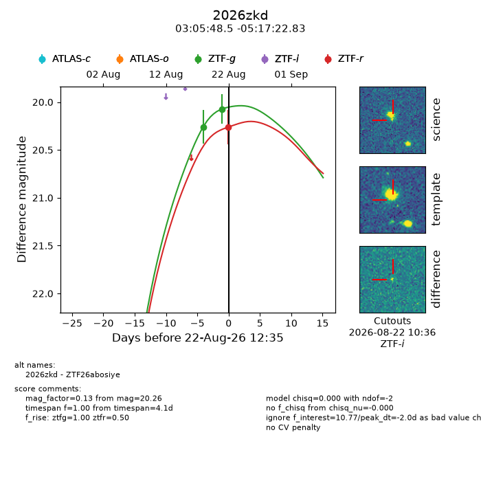
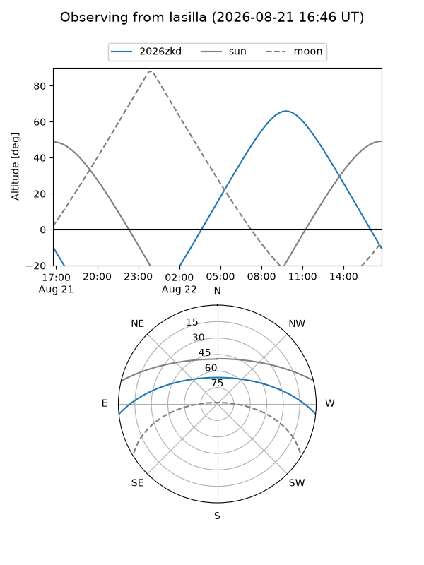
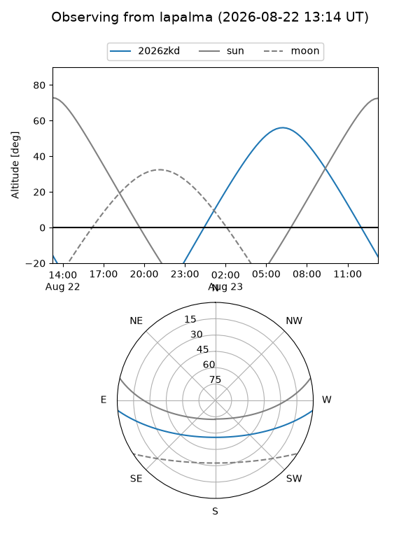
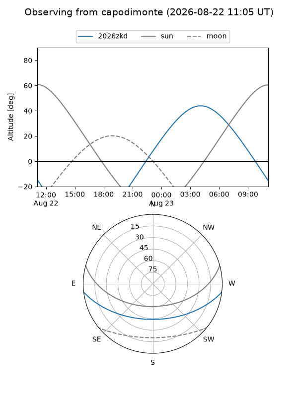
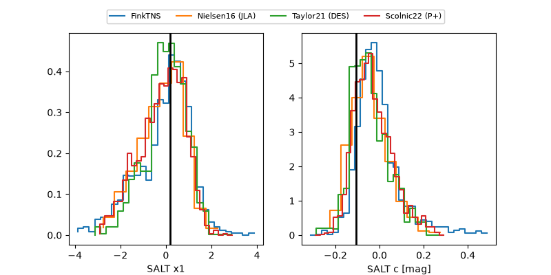

2026zkd
Target 2026zkd at 2026-08-22 12:38
Aliases and brokers:
FINK-ZTF: ztf.fink-portal.org/ZTF26abosiye
Lasair-ZTF: lasair-ztf.lsst.ac.uk/objects/ZTF26abosiye
ALeRCE-ZTF: alerce.online/object/ZTF26abosiye
YSE-PZ: ziggy.ucolick.org/yse/transient_detail/2026zkd
TNS name: wis-tns.org/object/2026zkd
Direct TNS query: direct search
alt names
ZTF26abosiye (ztf,fink_ztf)
2026zkd (tns,yse)
Coordinates:
equatorial (ra, dec) = 46.4520,-5.28967
equatorial (HMS+DMS) = 03:05:48.47,-05:17:22.83
galactic (l, b) = (184.6705,-51.28211)
Flags:
TNS type: nan
peak dt: -2.0
Photometry:
last ztfg=20.07, ztfr=20.26
2 ztfg, 1 ztfr detections
Lightcurve

Visibility



Additional plots
